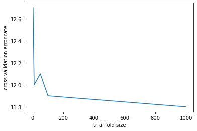
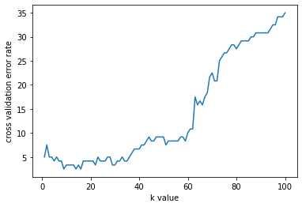

# set up code for this experiment
import numpy as np
import matplotlib.pyplot as plt
%matplotlib inline
np.random.seed(1)Lab 3: Cross Validation
CS 412
This lab can be conducted in groups or individually.
In this lab, we will see how to implement and use cross validation step by step.
Deadline: 23:59, Feb 17.
Please refer to Lab_Guideline.pdf in the same Google Drive folder as this Jupyter notebook; the guidelines there apply to all the labs.
Problem 1: Implementation of the k-Nearest Neighbours (kNN) classifier and Cross-Validation (36 points)
In Problem 1, you will implement cross validation from scratch, which is a good exercise to make sure that you fully understand this algorithm. Do not use any library such as scikit-learn that already has cross validation implemented. But you can use general libraries for array and matrix operations such as numpy.
1.1 Implementation of the k-Nearest Neighbours classifier
We have already implemented kNN in Lab 2. So for completeness, we have filled in the reference code below. There is no score associated with this sub-section.
Step 1. The kNN classifier mainly consists of two stages:
- During training, the classifier takes the training data and simply stores it.
- During testing, kNN classifies every test example \(x\) by
- finding the \(k\) training examples that are most similar to \(x\);
- outputing the most common label among these \(k\) examples.
To measure the similarity between samples, we commonly compute the Euclidean distance. The Euclidean distance (a.k.a. \(L_2\) distance) between two examples \(p\) and \(q\) in an \(n\)-dimensional space is defined as the square root of:
\[\begin{equation} (p_1-q_1)^2 + (p_2-q_2)^2 + ... + (p_n-q_n)^2. \tag{1} \end{equation}\]
This term is equal to \[\begin{equation} \sum_i p_i^2 + \sum_i q_i^2 - 2 \sum_i p_i q_i. \tag{2} \end{equation}\]
With Euclidean distance, the smaller the value, the more similar the two examples are. Actually, there are many different ways to measure the similarity, such as cosine distance, Manhattan, Chebyshev, and Hamming distance. In practice, you can choose the one that suits your problem.
For this lab, we will implement Equation (2) with the following euclidean_dist that computes the Euclidean distances. It will be called eventually by the knn_predict function in Step 3 below.
def euclidean_dist(X_test, X_train):
dists = np.add(np.sum(X_test ** 2, axis=1, keepdims=True), np.sum(X_train ** 2, axis=1, keepdims=True).T) - 2* X_test @ X_train.T
return distsStep 2. Once distances are calculated, we can find the top \(k\) nearest neighbors for each test example by retrieving from the dists matrix. In particular, for each test example \(x\), we can sort all the training examples by their distance to \(x\) then find the \(k\) most nearest neighbors.
def find_k_neighbors(dists, Y_train, k):
"""
find the labels of the top k nearest neighbors
Inputs:
- dists: distance matrix of shape (num_test, num_train)
- Y_train: A numpy array of shape (num_train) containing ground truth labels for training data
- k: An integer, k nearest neighbors
Output:
- neighbors: A numpy array of shape (num_test, k), where each row containts the
labels of the k nearest neighbors for each test example
"""
num_test = dists.shape[0]
neighbors = np.zeros((num_test, k))
sorted_idx = dists.argsort(axis=1)
for i in range(num_test):
neighbors[i] = Y_train[sorted_idx[i][:k]]
return neighborsStep 3. Finally, we can put together euclidean_dist and find_k_neighbors, so that labels can be predicted for test examples. In kNN, we take the labels of the \(k\) nearest neighbors and find the most common one and assign it to the test sample.
def knn_predict(X_test, X_train, Y_train, k):
"""
predict labels for test data.
Inputs:
- X_test: A numpy array of shape (num_test, dim_feat) containing test data.
- X_train: A numpy array of shape (num_train, dim_feat) containing training data.
- Y_train: A numpy array of shape (num_train) containing ground truth labels for training data
- k: An integer, k nearest neighbors
Output:
- Y_pred: A numpy array of shape (num_test). Predicted labels for the test data.
"""
# TODO:
# find the labels of k nearest neighbors for each test example,
# and then find the majority label out of the k labels
#
# Here is the pseudo-code:
# dists = euclidean_dist(X_test, X_train)
# neighbors = find_k_neighbors(dists, Y_train, k)
# Y_pred = np.zeros(num_test, dtype=int) # force dtype=int in case the dataset
# # stores labels as float-point numbers
# for i = 0 ... num_test-1
# Y_pred[i] = # the most common/frequent label in neighbors[i], you can
# # implement it by using np.unique
# return Y_pred
num_test = X_test.shape[0]
Y_pred = np.zeros(num_test, dtype=int)
dists = euclidean_dist(X_test, X_train)
neighbors = find_k_neighbors(dists, Y_train, k)
for i in range(num_test):
value, counts = np.unique(neighbors[i], return_counts=True)
idx = np.argmax(counts)
Y_pred[i] = value[idx]
return Y_predStep 4. Once we obtain the predicted labels, we need to implement a function to compare them against the true label and compute the error rate in percentage (i.e., a number between 0 and 100). In the following code block, implement the compute_error_rate function by following the specified inputs and output.
def compute_error_rate(ypred, ytrue):
"""
Compute error rate given the predicted results and true lable.
Inputs:
- ypred: array of prediction results.
- ytrue: array of true labels.
ypred and ytrue should be of same length.
Output:
- error rate: float number indicating the error in percentage
(i.e., a number between 0 and 100).
"""
error_rate = (ypred != ytrue).mean()*100
return error_rate1.2 Splitting training data for cross validation (36 points)
Cross validation is a technique in which we train our model using a subset of the available dataset and then evaluate using the complementary subset of the data. In this assignment, we use the \(n\)-fold cross validation method to perform cross validation. In \(n\)-fold cross validation, we evenly partition the dataset into \(n\) mutually disjoint subsets (a.k.a. folds). We train an ML model on all but one subset (i.e., train on the union of \(n-1\) folds), and then evaluate the model on the subset that was left out. The former is called training subset, while the latter is called validation subset. This process is repeated \(n\) times, with a different subset reserved for evaluation (and excluded from training) each time. If the size of the dataset is not exactly divisible by \(n\), the remainder can be arbitrarily distributed into the folds.
Step 1. (18 points) In the following code block, you will need to implement a function that partitions the dataset in to training sets and validation sets. The output should be lists of indices which indicate the training examples and validation examples. Function inputs and outputs are detailed in the code block.
Hint: You may find random permutation useful here: np.random.permutation
def split_nfold(num_examples, n):
"""
Split the dataset in to training sets and validation sets.
Inputs:
- num_examples: Integer, the total number of examples in the dataset
- n: number of folds
Outputs:
- train_sets: List of lists, where train_sets[i] (i = 0 ... n-1) contains
the indices of examples for training
- validation_sets: List of list, where validation_sets[i] (i = 0 ... n-1)
contains the indices of examples for validation
Example:
When num_examples = 10 and n = 5,
the output train_sets should be a list of length 5,
and each element in this list is itself a list of length 8,
containing 8 indices in 0...9
For example,
we can initialize by randomly permuting [0, 1, ..., 9] into, say,
[9, 5, 3, 0, 8, 4, 2, 1, 6, 7]
Then we can have
train_sets[0] = [3, 0, 8, 4, 2, 1, 6, 7], validation_sets[0] = [9, 5]
train_sets[1] = [9, 5, 8, 4, 2, 1, 6, 7], validation_sets[1] = [3, 0]
train_sets[2] = [9, 5, 3, 0, 2, 1, 6, 7], validation_sets[2] = [8, 4]
train_sets[3] = [9, 5, 3, 0, 8, 4, 6, 7], validation_sets[3] = [2, 1]
train_sets[4] = [9, 5, 3, 0, 8, 4, 2, 1], validation_sets[4] = [6, 7]
Within train_sets[i] and validation_sets[i], the indices do not need to be sorted.
"""
# generate random index list
# fold_size = num_examples//n # compute how many examples in one fold.
# # note '//' as we want an integral result
# train_sets = []
# validation_sets = []
# for i = 0 ... n-1
# start = # compute the start index of the i-th fold
# end = # compute the end index of the i-th fold
# if i == n-1
# end = num_examples # handle the remainder by allocating them to the last fold
# For example, when num_examples = 11 and n = 5,
# fold_size = 11//5 = 2
# i = 0: start = 0, end = 2
# i = 1: start = 2, end = 4
# i = 2: start = 4, end = 6
# i = 3: start = 6, end = 8
# i = 4: start = 8, end = 11 (take up the remainder of 11//5)
#
# # Now extract training example indices from the idx list using start and end
# train_set = idx[`0 to num_example-1` except `start to end-1`]
# train_sets.append(train_set)
#
# # Extract validation example indices from the idx list using start and end
# val_set = idx[start to end-1]
# validation_sets.append(val_set)
#avoid randomness
np.random.seed(1)
# *****START OF YOUR CODE (DO NOT DELETE/MODIFY THIS LINE)*****
# create list of num_examples size with random indices
idx = np.random.permutation(num_examples).tolist()
# find fold size
fold_size = num_examples//n # compute how many examples in one fold. # note '//' as we want an integral result
# intialize train_sets
train_sets = []
# initialize val_sets
validation_sets = []
# find training and val sets for each fold
for i in range(n):
# calculate start and end for each fold size
start = i * fold_size
end = fold_size + i * fold_size
# if num_examples does not divide evenly
if i == n-1:
end = num_examples # handle the remainder by allocating them to the last fold
# Extract training indices, exclude between start and end
train_set = [idx[x] for x in range(num_examples) if x not in range(start,end)]
train_sets.append(train_set)
# Extract validation example indices from the idx list using start and end
val_set = idx[start:end]
validation_sets.append(val_set)
# *****END OF YOUR CODE (DO NOT DELETE/MODIFY THIS LINE)*****
return train_sets, validation_sets
# Unit test code here (you can uncomment the lines below to test)
train_sets, val_sets = split_nfold(11, 5)
print(train_sets)
print(val_sets)[[4, 9, 1, 6, 0, 7, 10, 8, 5], [2, 3, 1, 6, 0, 7, 10, 8, 5], [2, 3, 4, 9, 0, 7, 10, 8, 5], [2, 3, 4, 9, 1, 6, 10, 8, 5], [2, 3, 4, 9, 1, 6, 0, 7]]
[[2, 3], [4, 9], [1, 6], [0, 7], [10, 8, 5]]Step 2. (18 points) Next, you will need to implement the cross_validation function, which will output the cross validation error rate. You may want to call previously defined functions such as split_nfold and compute_error_rate. In this function, you need to loop over each of the \(n\) training/validation partitions in the output of split_nfold. Then perform training on train_sets[i] and compute the test error on validation_sets[i]. The final cross validation error rate is the average error rate over all partitions.
To improve generality, cross_validation takes as its first input argument a generic classifier function. In this lab, we will use kNN, and classifier should be instantiated by the knn_predict function that is implemented above. In general, the classifier function should conform with a prescribed protocol of prototype, i.e., what the input and output arguments are. For example its inputs are (X_test, X_train, Y_train, k) and its output is Y_pred.
Hint: You may need to know how to use *args
def cross_validation(classifier, X, Y, n, *args):
"""
Perform cross validation for the given classifier,
and return the cross validation error rate.
Inputs:
- classifier: function of classification method
- X: A 2-D numpy array of shape (num_train, dim_feat), containing the whole dataset
- Y: A 1-D numpy array of length num_train, containing the ground-true labels
- n: number of folds
- *args: parameters needed by the classifier.
In this assignment, there is only one parameter (k) for the kNN clasifier.
For other classifiers, there may be multiple paramters.
To keep this function general,
let's use *args here for an unspecified number of paramters.
Output:
- error_rate: a floating-point number indicating the cross validation error rate
"""
# Here is the pseudo code:
# errors = []
# size = X.shape[0] # get the number of examples
# train_sets, val_sets = split_nfold(size, n) # call the split_nfold function
#
# for i in range(n):
# train_index = train_sets[i]
# val_index = val_sets[i]
# # get the training and validation sets of input features from X
# X_train, X_val = X[...], X[...]
#
# # get the training and validation labels from Y
# y_train, y_val = Y[...], Y[...]
#
# # call the classifier to get prediction results for the current validation set
# ypred = # call classifier with X_val, X_train, y_train, and *args
#
# error = # call compute_error_rate to compute the error rate by comparing ypred against y_val
# append error to the list `errors`
# error_rate = mean of errors
np.random.seed(1)
# *****START OF YOUR CODE (DO NOT DELETE/MODIFY THIS LINE)*****
# Initialize list for errors
errors = []
# find # of examples
size = X.shape[0]
# use split_nfold function to get training and val sets
train_sets, val_sets = split_nfold(size, n)
# get corresponding value of X related to train and val sets
for i in range(n):
train_index = train_sets[i]
val_index = val_sets[i]
# get the training and validation sets of input features from X
X_train, X_val = X[train_index], X[val_index]
# get the training and validation labels from Y
y_train, y_val = Y[train_index], Y[val_index]
# call the classifier to get prediction results for the current validation set
y_pred = classifier(X_val, X_train, y_train, *args)
# call compute_error_rate to compute the error rate by comparing ypred against y_val
error = compute_error_rate(y_pred, y_val)
errors.append(error)
# error_rate = mean of errors
error_rate = sum(errors)/len(errors)
# *****END OF YOUR CODE (DO NOT DELETE/MODIFY THIS LINE)*****
return error_rate
# Unit test code here (you can uncomment the lines below to test)
X_dataset = np.array([[1, 2], [0, 3], [-1, 1], [-1, 0], [2, 1]])
Y_dataset = np.array([1, 1, 1, 0, 0])
n = 5
k = 3
cross_validation(knn_predict, X_dataset, Y_dataset, n, k)40.0Side note: instead of for i in range(n):, you can also use
for (train_index, val_index) in zip(train_sets, val_sets):
Try it if you like as it can be more generic. No need to submit anything for it.
Problem 2: Optical character recognition (OCR) (18 points)
We will now apply the above developed function to a real world problem of optical character recognition (OCR).
Load the MNIST dataset. In the following code block, we have downloaded the MNIST dataset and split the data into trainning and test sets. This part has already been done, and you can directly run it with no need of modifying the code. But do make sure that you understand the code as it will be useful for future labs.
Note: after running the code, the training data (Xtrain, ytrain) has 10,000 examples, and the test data (Xtest, ytest) also has 10,000 examples.
import os
import gzip
DATA_URL = 'https://www.cs.uic.edu/~zhangx/teaching/'
# Download and import the MNIST dataset from Yann LeCun's website.
# Each image is an array of 784 (28x28) float values from 0 (white) to 1 (black).
def load_data():
x_tr = load_images('train-images-idx3-ubyte.gz')
y_tr = load_labels('train-labels-idx1-ubyte.gz')
x_te = load_images('t10k-images-idx3-ubyte.gz')
y_te = load_labels('t10k-labels-idx1-ubyte.gz')
return x_tr, y_tr, x_te, y_te
def load_images(filename):
maybe_download(filename)
with gzip.open(filename, 'rb') as f:
data = np.frombuffer(f.read(), np.uint8, offset=16)
return data.reshape(-1, 28 * 28) / np.float32(256)
def load_labels(filename):
maybe_download(filename)
with gzip.open(filename, 'rb') as f:
data = np.frombuffer(f.read(), np.uint8, offset=8)
return data
# Download the file, unless it's already here.
def maybe_download(filename):
if not os.path.exists(filename):
from urllib.request import urlretrieve
print("Downloading %s" % filename)
urlretrieve(DATA_URL + filename, filename)
Xtrain, ytrain, Xtest, ytest = load_data()
train_size = 10000
test_size = 10000
Xtrain = Xtrain[0:train_size]
ytrain = ytrain[0:train_size]
Xtest = Xtest[0:test_size]
ytest = ytest[0:test_size]2.1 Effect of different number of cross validation folds (18 points)
In the following code block, we will perform cross validation on 1-NN classification. Call the knn_predict and cross_validation functions you have implemented, and compute the cross validation error rate for the first 1000 training examples with different number of folds \(n \in \{3, 10, 50, 100, 1000\}\). Then print the error rate for each different \(n\) and plot a figure where the \(x\)-axis is \(n = \{3, 10, 50, 100, 1000\}\), and the \(y\)-axis is the \(n\)-fold cross validation error rate.
Note about terminology: In Problem 1, we used the term dataset, and the \(n\)-fold partitioning was on the dataset. Now in the current setting, these 1000 training examples correspond to the dataset. In other words, this Section 2.2 will not use the test examples loaded from Problem 2, nor the remaining \(10000 - 1000 = 9000\) training examples.
size = 1000
k = 1
# Here is the pseudo code:
#
# get the feature/label of the first 'size' (i.e., 1000) number of training examples
# cvXtrain = Xtrain[...]
# cvytrain = ytrain[...]
# trial_folds = [3, 10, 50, 100, 1000]
# trials = number of trials on #folds, i.e., get the length of trial_folds (=5)
# cverror_rates = [0]*trials
# for t = 0 ... trials-1
# error_rate = # call the 'cross_validation' function to get the error rate
# # for the current trial (of fold number)
# cverror_rates[t] = error_rate
#
# # print the error rate for the current trial.
# print('{:d}-folds error rate: {:.2f}%\n'.format(trial_folds[t], error_rate))
#
# plot the figure:
# f = plt.figure()
# plt.plot(...)
# plt.xlabel(...)
# plt.ylabel(...)
# plt.show()
# *****START OF YOUR CODE (DO NOT DELETE/MODIFY THIS LINE)*****
# retrieve 1000 training examples
cvXtrain = Xtrain[:size]
cvytrain = ytrain[:size]
# define folds
trial_folds = [3,10,50,100,1000]
trials = len(trial_folds)
cverror_rates = [0]*trials
for t in range(trials):
error_rate = cross_validation(knn_predict, cvXtrain, cvytrain, trial_folds[t], k)
cverror_rates[t] = error_rate
print('{:d}-folds error rate: {:.2f}%\n'.format(trial_folds[t], error_rate))
# plot the figure:
f = plt.figure()
plt.plot(trial_folds, cverror_rates)
plt.xlabel("trial fold size")
plt.ylabel("cross validation error rate")
plt.show()
# *****END OF YOUR CODE (DO NOT DELETE/MODIFY THIS LINE)*****3-folds error rate: 12.70%
10-folds error rate: 12.00%
50-folds error rate: 12.10%
100-folds error rate: 11.90%
1000-folds error rate: 11.80%

Problem 3: Iris plant recognition (46 point)
The iris dataset includes 3 iris species of 50 examples each, where each example recorded petal and sepal length. For convenience, we will use the built-in functions in scikit-learn library to load dataset and create data partitions. For this experiment, we will use \(80\%\) (120) examples for training and \(20\%\) (30) for testing.
Actually, we have done this data preparation work for you. You can directly use the training set (X_train, Y_train) and test set (X_test, Y_test) for the experiments, where X is features and Y is labels.
from sklearn.datasets import load_iris
from sklearn.model_selection import train_test_split
# loading iris dataset
iris = load_iris()
# split dataset into training set and test set
X_train, X_test, Y_train, Y_test = train_test_split(iris.data, iris.target, test_size=0.2, random_state=1)3.1 Find the best \(k\). (18 points)
In Problem 2, we conducted the experiments by arbitrarily setting \(k\) to 1. In fact, the value of \(k\) has a considerable impact on the performance of kNN. We will now determine the best value of this hyperparameter with \(10\)-fold cross-validation. To specify, we will vary \(k\) in the range (1, 100) in increments of 1. Then we will find the best \(k\) in terms of the lowest validation error rate. For this question, you need to: * (9 points) Store the validation error for each \(k\) in an array and report the value of the best \(k\). * (9 points) Plot a curve that shows the validation error rates as \(k\) increases.
Note about terminology: In Problem 1, we used the term dataset, and the \(n\)-fold partitioning was on the dataset. Now in the current setting, (X_strain, Y_train) loaded above correspond to the dataset. In other words, this Section 3.1 will not use the test examples loaded above.
# Here is the pseudo code:
# list_ks = 1,2,...,100
# err_ks = 1D array of length 100
# for k in list_ks:
# err_ks[k-1] = cross_validation under k
# best_k = argmin(err_ks)+1
# plot err_ks versus list_ks
# *****START OF YOUR CODE (DO NOT DELETE/MODIFY THIS LINE)*****
list_ks = list(range(1,101))
err_ks = [0]*100
fold_size = 10
for k in list_ks:
err_ks[k-1] = cross_validation(knn_predict, X_train, Y_train, fold_size, k)
best_k = np.argmin(err_ks)+1
print("best k:", best_k)
plt.plot(list_ks, err_ks)
plt.xlabel('k value')
plt.ylabel('cross validation error rate')
plt.show()
# *****END OF YOUR CODE (DO NOT DELETE/MODIFY THIS LINE)*****best k: 9
3.2 Evaluation on test set (8 points)
Since we have found the best hyperparameters for kNN classifier, it’s time to evaluate this method on test data.
Task (8 points): Report the classification error of kNN on test data, where \(k\) is the optimal one from Section 3.1 (break tie arbitrarily).
# Here is the pseudo code:
# y_pred = knn_predict on X_test using X_train, Y_train, and best_k
# use compute_error_rate to compute the error of y_pred compared with Y_test
# Print the error rate with a line like 'The test error is x.y%'
# *****START OF YOUR CODE (DO NOT DELETE/MODIFY THIS LINE)*****
#predict with knn_predict
y_pred = knn_predict(X_test, X_train, Y_train, best_k)
# compute and print test error
err_test = compute_error_rate(y_pred, Y_test)
print('The test error is ', err_test,'%')
# *****END OF YOUR CODE (DO NOT DELETE/MODIFY THIS LINE)*****The test error is 3.3333333333333335 %3.3 F-score measurement (20 points)
So far we have mainly used classification accuracy to evaluate the performance of our model. As a performance measure, accuracy is inappropriate for imbalanced classification problems. An alternative is the F-score metrics.
Tasks * (10 points) Implement the computation of the confusion matrix on test set using y_test and the prediction y_pred from Section 3.2. You can compare your result with the one computed by sklearn.metrics.confusion_matrix to ensure your implementation is correct. * (4 points) Report the precision, recall, and F1-score for each class by using the built-in functions from sklearn.metrics.classification_report. * (6 points) Write your own code to compute the F1-score for the three classes, and make sure they match the f1-score column of the sklearn result.
Hint: All definitions of confusion matrix, precision, recall, and F1-score can be found in the slides for Chapter19: DESİGN AND ANALYSİS OF MACHİNE LEARNİNG EXPERİMENTS.
nclass = len(np.unique(Y_test)) # should be 3. Just be more adaptive to data.
cm = np.zeros((nclass, nclass), dtype=int) # confusion matrix is integer valued
# Here is the pseudo code for Task 1:
# for t = 0...nte-1 # nte is the number of test examples
# cm[c1, c2] += 1 # c1 and c2 corresponds to the class of the t-th test example
# # according to Y_test and y_pred, respectively
#
# Here is the pseudo code for Task 3:
# Well, please consult the textbook, as I really hope you can do it yourself,
# especially when the right answer is provided by sklearn for comparison
# *****START OF YOUR CODE (DO NOT DELETE/MODIFY THIS LINE)*****
#Task 1
for t in range(len(Y_test)):
c1 = Y_test[t]
c2 = y_pred[t]
cm[c1, c2] += 1
print(cm)
#Task 2
from sklearn.metrics import classification_report
cr = classification_report(Y_test, y_pred)
print(cr)
#Task 3
f1 = [0]*nclass
for n in range(nclass):
#calculate precision
precision = cm[n,n] / cm.sum(axis=0)[n]
#calculate recall
recall = cm[n,n] / sum(cm[n])
#calculate f1
f1[n] = 2 * (precision * recall) / (precision + recall)
print(f1)
# *****END OF YOUR CODE (DO NOT DELETE/MODIFY THIS LINE)*****[[11 0 0]
[ 0 12 1]
[ 0 0 6]]
precision recall f1-score support
class 0 1.00 1.00 1.00 11
class 1 1.00 0.92 0.96 13
class 2 0.86 1.00 0.92 6
accuracy 0.97 30
macro avg 0.95 0.97 0.96 30
weighted avg 0.97 0.97 0.97 30
[1.0, 0.9600000000000001, 0.923076923076923]Submission Instruction
You’re almost done! Take the following steps to finally submit your work.
- After executing all commands and completing this notebook, save your
Lab_3.ipynbas a PDF file, named asX_Y_UIN.pdf, whereXis your first name,Yis your last name, andUINis your UIN. Make sure that your PDF file includes all parts of your solution, including the plots.
- Print out all unit test case results before printing the notebook into a PDF.
- If you use Colab, open this notebook in Chrome. Then File -> Print -> set Destination to “Save as PDF”. If the web page freezes when printing, close Chrome and reopen the page. If Chrome doesn’t work, try Firefox.
- If you are working on your own computer, we recommend using the browser (not jupyter) for saving the PDF. For Chrome on a Mac, this is under File->Print…->Open PDF in Preview. When the PDF opens in Preview, you can use Save… to save it.
- Sometimes, a figure that appears near the end of a page can get cut. In this case, try to add some new lines in the preceding code block so that the figure is pushed to the beginning of the next page. Or insert some text blocks.
Upload
X_Y_UIN.pdfto Gradescope underLab_3_Written.A template of
Lab_3.pyhas been provided. For all functions inLab_3.py, copy the corresponding code snippets you have written into it, excluding the plot code. Do NOT copy any code of plotting figures and do not import matplotlib. This is because the auto-grader cannot work with plotting. Do NOT change the function names.Zip
Lab_3.pyandLab_3.ipynb(2 files) into a zip file namedX_Y_UIN.zip. Suppose the two files are in the folderLab_3. Then zip up the two files inside theLab_3folder. Do NOT zip up the folderLab_3because the auto-grader cannot search inside a folder. Submit this zip file to Gradescope underLab_3_Code.The autograder on Gradscope will be open all the time. We designed some simple test cases to help you check wehther your functions are executable. You will see the results of running autograder once you submit your code. Please follow the error messages to debug. Since those simple test cases are designed for debugging, it does not guaranttee your solution will work well on the real dataset. It is your responsibility to make your code logically correct. Since all functions are tested in batch, the autograder might take a few minutes to run after submission.
If you only try to get real-time feedback from auto-grader, it will be fine to just upload Lab_3.py to Lab_3_Code. However, the final submission for grading should still follow the above point 4.
You can submit to Gradescope as often as you like. We will only consider your last submission before the deadline.